Love The One You're With
I am hoping that some of you have read my last column, "Moving
On Up." In today's lesson, yet another (very) old
chestnut from the early seventies, we'll be seeing practical
applications of the chord shapes learned there. For good measure,
we'll toss in a few (very) easy fills and then also look at
how we'd play it in Drop D tuning. Sound okay?
So without further ado:
These files are the author's own work and represents his
interpretation of this song. They are intended solely for
private study, scholarship or research.
Shall we also get the other "usual" stuff out of
the way as well? Yes, there are (many) other ways to play
this song. Yes, I'm sure that this will cause lots of people
to exclaim, "That's not the right way!!" Yes, I
still don't care about all that. As I said just a paragraph
or so ago, this lesson is meant to show you a way to use moveable
chords so that you can go on to use them yourself.
This is from one of Stephen Stills' early solo works. Possibly
his first but I cannot tell you that for sure. While I have
a lot of dates and chords and numbers in my head, I still
do not trust my ability to keep them straight.
RHYTHM
All right, then. We're going to play this song in the key
of D major, for reasons which will (hopefully) become apparent
as we progress. There are only four chords in the song. In
this key, they are D, G, C and A. Technically speaking, there
is a Cmaj9 (a C major chord with B and D added) which is used
in the OUTRO, but you'll see that it is so easy to play you'll
laugh at me for calling it a chord.
The major hook of this song is the four measure D - G - D
- C - D progression that makes up the introduction and verses.
It is a matter of both rhythm and chord voicings. Let's look
at the rhythm first. Before delving into the somewhat harder
stuff, we should get the main pattern down pat. You will find
that most complicated rhythm patterns are minor variations
of simple ones, so if you nail down the simple one, you're
halfway there! And here's the simple one:
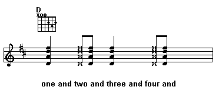
Remember that when faced with something that seems difficult,
fall back to the easiest ground possible. For me, that is
thinking of four downstrokes to make up the four beats of
a measure. Then, I add up strokes on the offbeats (the "ands"
if you count it "one and two and three and four and...")
so that I am playing straight eighth notes. Then I start taking
things out. It's almost become second nature for me to kick
out the first offbeat. On the second beat I do a downstroke
while muting the strings with my strumming hand and then I
come back with an upstroke on the second offbeat followed
by an immediate downstroke on the third beat. Repeating this
process gives me a driving rhythm guitar part, which sounds
very strong when you play it quickly. And this is a fast song!
But please, please, please, remember to start out as slowly
as you have to in order to get things right. The strummed
chords (in capitals) will almost seem like a train going down
a track when played with the silent or muted strokes (in parentheses)
- "ONE (and two) AND THREE (and four) AND ONE (and two)
AND THREE (and four) AND..."
If you're still not sure that you've got it right, try this:
without your guitar, tap out the rhythm on your knees. Use
your strumming hand to beat the fully strummed beats and offbeats
on one leg and your other hand (on your other leg) to quietly
tap out the silent or muted ones. When you have it safely
and securely fixed into your head, then try it out with the
guitar. First only play it with one chord (D would be a good
choice) and really get the feel of it before you try to do
it while changing chords. This may seem like a lot of overkill,
but when you think about it, anytime you're playing the guitar
there is a lot going on. Rather than let yourself feel overwhelmed
or get frustrated, break things down into smaller parts that
you can deal with before trying to tackle the whole thing
at once.
Once you are confident with this rhythm, then try this one:
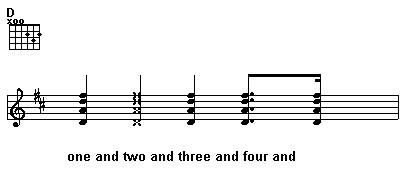
Because this rhythm is a little more complicated, I usually
hit everything from the third beat onward with upstrokes.
For me, I now know to pay more attention to what I'm doing
because I've broken out of my normal down/up every eighth
note pattern. The first three beats are actually quite easy
when I stop to analyze it. A full downstroke on the first
beat followed by a palm muted downstroke on the second beat
followed by a full upstroke on the third beat. The fourth
beat also gets a full upstroke. Then things look a little
strange, right? Well, again, remember that everything can
be slowed down and taken apart. That is up to you. Just as
we've learned to divide our quarter notes into two eight notes,
we can then split them into four sixteenth notes:
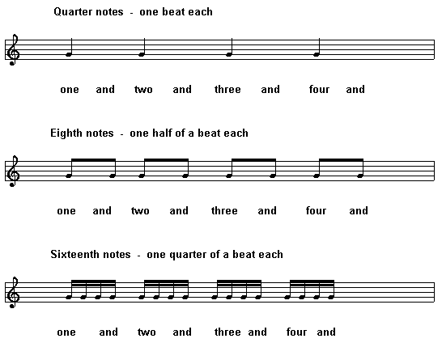
The dot after the eighth note on the fourth beat indicates,
as all dots do, that we are to hold it for the length of an
eighth and a sixteenth. So the note we finally play, again
using a full upstroke, occurs on the last half of the "and"
as we are counting it. By the way, sometime early next month
I should finally have finished Part II of the "Guide
To Reading Music Notation," which will deal with
measures and timing so hopefully this will all begin to make
sense to you.
Now, when you are ready to do so, it's time to put the two
rhythms together, like this:
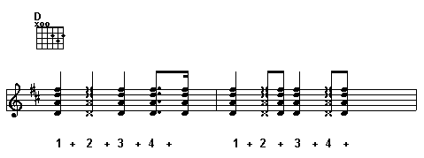
Again, first do this playing one single chord and strumming
at a tempo that allows you to do it correctly. I know you
probably get tired of me saying this, but I can assure you
it will always be to your benefit. When you are confident
about your rhythm, then you'll find that dealing with weird
chord voicings is not anywhere near as traumatic as you might
think.
CHORDS AND CHORUS
In fact, we're probably going to breeze through this section!
As I said earlier, the verses consist of a D - G - D - C -
D progression. But this progression will be played with only
two chord shapes:
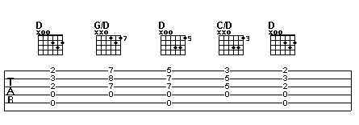
Better yet, the way the rhythm of the song is structured,
you have built in time to make the moves up and down the neck!
You'd think someone planned it that way!
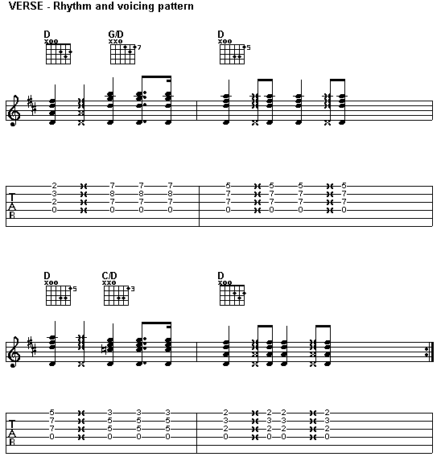
You can see how this is going to work. The first beat is
on a regular first position D chord. Then you slide the entire
chord shape from the second and third frets up to the seventh
and eighth frets, where it becomes a G chord with the D in
the bass. On the next measure we're back to the D chord again,
but this time it is a D chord in the A shape. I finger this
with my index finger on the high E (1st) string, ring finger
on the B string and middle finger on the G string.
Being a D major chord, you can feel free to bang away on
the open D and A strings. With these particular chord voicings
in the key of D, the open ringing D and A strings serve as
a drone and give you all the bass you need.
In the third measure, we are still playing our D chord, which
is still in the A shape. We then shift the whole shape down
two frets where the chord becomes a C/D (C major with D in
the bass) and then come right back to original first position
D at the start of measure four. This is pretty much the hard
part of the song! Nothing to it, right?
Like everything we've done, take your time practicing this
before working it up to speed. If you are using the upstrokes
I showed you in the rhythm for the first and third measures,
you should find the chord transitions pretty smooth and also
that you have more control over the ringing D and A strings
because you're coming from the bottom up.
And when you get to the chorus, you'll find it dull in comparison!
Mere D, A and G chords in first position? Well, to make it
a tad more interesting, I threw in some very easy fills on
the second measure of the G:
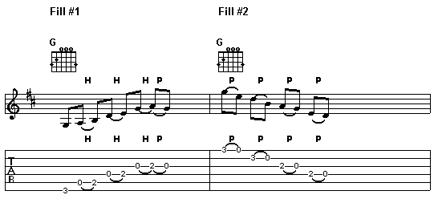
Fill #1 starts with your hand holding the G chord. Strike
the G note in the bass (3rd fret on the 6th string) and then
remove your index finger so that you can strike the open A
string. Now use youe index finger to hammer on the second
fret to get the B note. Repeat this process of using the index
finger as a hammer on the second fret on the D and then G
strings. Finish off the final hammer on the G string with
a pick off back to the open G.
The second fill is just the opposite. Again, starting with
the G chord, use whatever finger you use to fret the G (3rd
fret) on the first string and pick off to the open E. Then
use that same finger to pick off from the D note (3rd fret
on the B string) to the open B. Go back to your trusty index
finger for the final two pick offs.
Now, you may find these to be pretty simple, too, but there's
a method to my madness. You should notice that both of these
fills are easy to perform if you keep your hands in the open
G shape when you play them. This is an important thing to
remember - the less work you have to do, the more you will
be able to do. If you get comfortable finding riffs wherever
your hands happen to be, you'll find yourself always playing
something instead of just sitting on the chord. This makes
for interesting moments and is essentially how a lot of people
develop their own style.
And this is also something we're going to be covering in
the next few lessons!
THE EXTRAS
There is an outro. In the original recording, this is also
played immediately after the second chorus and before an instrumental
chorus. So structure-wise, Love The One You're With looks
like this:
INTRO
1st VERSE
CHORUS
2nd VERSE
CHORUS
OUTRO
INSTRUMENTAL CHORUS
3rd VERSE
CHORUS
OUTRO
The outro basically consists of a measure and a half (six
beats) of C alternating with Cmaj9. Now, before you start
thinking you don't want to learn a complex chord like that,
take a look:
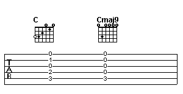
How much easier can it be? Play a C chord and then simply
remove your index and middle fingers. Presto! Cmaj9. I told
you that you'd laugh. For the final D, I like to use this
chord voicing:
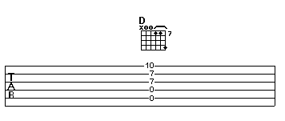
And here's the finished product:


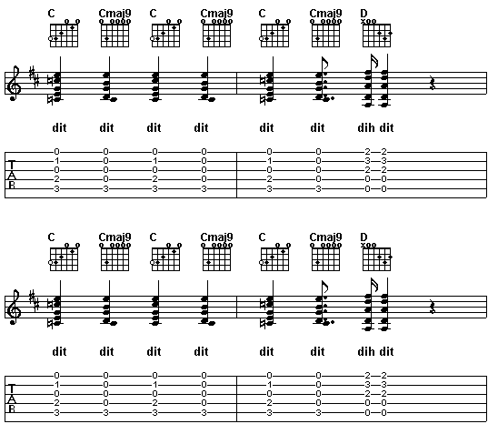
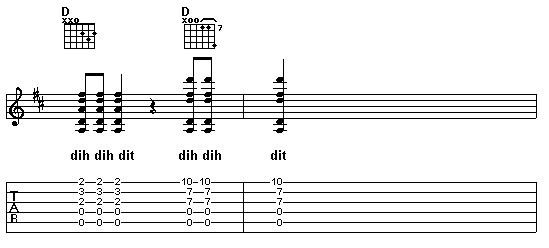
Okay, now if you want to have some more fun with this, try
it in Drop D tuning. To get this, you tune the low E (6th)
string down one whole step to D. Now play the verses the same
way, same chord shapes and all but with one difference - you
can play your 6th string at will! Just listen to how much
more oomph you get from your guitar when you play these chords!
And, man, you should really try this on a twelve string!
In Drop D, though, you will run into a little trouble on
the chorus. These are two ways to play the G chord:
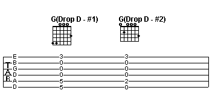
If you use the second form, you should have no trouble with
the fills (although the first note of the first fill will
now be a D instead of a G). Using the first G chord, you are
going to lose a step in the transition and should just start
the riff one note later. It's no big deal either way.
When I play the A and C chords (and the two C chords in the
outro as well) in Drop D tuning, I usually mute the 6th string
by grabbing it with the tip of my thumb. Not the most gracious
of techniques, but it works!
I hope that you enjoy this lesson and that it gives you more
of an understanding of the chord shapes we discussed in "Moving
On Up." Next time out we'll not only look at more
of these shapes, but we'll also start to examine single note
riffs used in songs. It'll be a little different from our
past lessons in that we'll look at a number of songs, not
just one.
And, as always, please feel free to write in with any questions,
comments, concerns or songs (and/or riffs and solos) you'd
like to see discussed in future pieces. You can either drop
off a note at the Guitar
Forum page or email me directly at Dhodge8888@cs.com.
Until next lesson…
Peace
David Hodge 2002-03-29
Previous
song in this series "Happy Christmas"
Next song in this series
"Hey Hey My My"
|